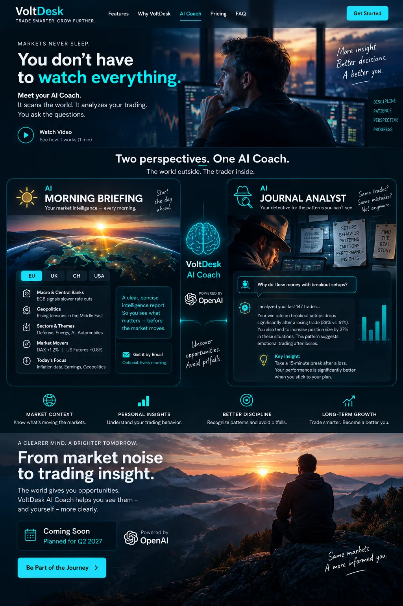

01 · LOOK OUTSIDE
☀️ AI Morning Briefing
Your market radar. VoltDesk scans your selected region and turns market information into one focused intelligence briefing — with optional email delivery.

VoltDesk is already your trading environment. In Q2 2027, AI Coach adds a new layer of intelligence: AI Market Intelligence to understand the world around your markets, and a Behavioural Engine to uncover patterns in your own trading.
Your market radar. VoltDesk scans your selected region and turns market information into one focused intelligence briefing — with optional email delivery.
Ask your journal a question. AI and VoltDesk analysis logic search for patterns, relationships and behavioural signals hidden in your trading history.
The AI Coach does not trade for you. It gives you more context about the market and more insight into yourself — so you can make your own trading decisions with better information.